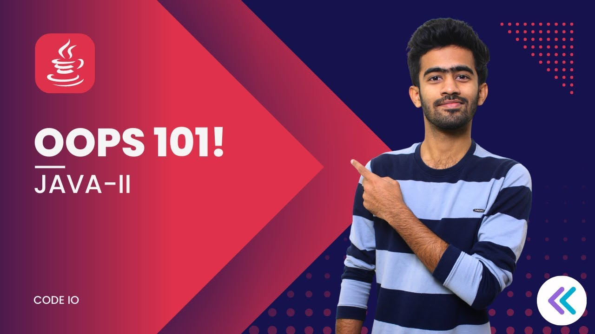
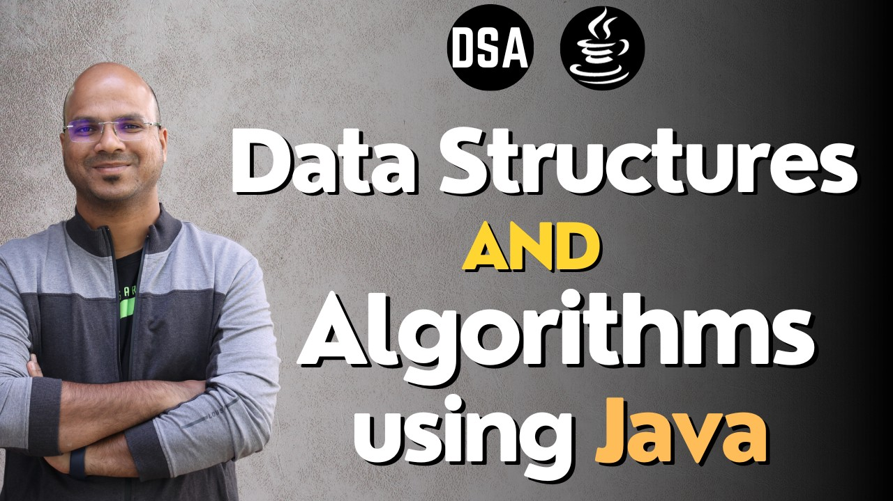

This video is a part 1 of a Java programming tutorial series. In this video, the instructor covers the basics of Java programming, including:
Data types: Numbers, characters, booleans, and strings Variables: Storing and retrieving data Operators: Performing calculations and comparisons Conditional statements: Making decisions based on conditions Loops: Repeating code multiple times Arrays: Storing collections of data Classes and objects: Creating custom data types Functions: Reusable blocks of code Inheritance: Creating new classes from existing classes

Data types: Numbers, characters, booleans, and strings Variables: Storing and retrieving data Operators: Performing calculations and comparisons Conditional statements: Making decisions based on conditions Loops: Repeating code multiple times Arrays: Storing collections of data Classes and objects: Creating custom data types Functions: Reusable blocks of code Inheritance: Creating new classes from existing classes
This video is about Object Oriented Programming (OOP) in Java.
Functions: The speaker defines functions and explains the difference between functions with and without parameters. Recursion: A function calling itself is called recursion. Classes and Objects: The speaker introduces the concept of classes and objects and how to create them. Encapsulation: Encapsulation is the bundling of data and methods together into a single unit. Inheritance: Inheritance is the ability of a class to inherit properties from another class. Polymorphism: Polymorphism is the ability of an object to take on different forms. Abstract classes and methods: Abstract classes are classes that contain abstract methods, which are methods that do not have a body and must be implemented by subclasses. Interfaces: Interfaces are collections of abstract methods that other classes can implement.

Functions: The speaker defines functions and explains the difference between functions with and without parameters. Recursion: A function calling itself is called recursion. Classes and Objects: The speaker introduces the concept of classes and objects and how to create them. Encapsulation: Encapsulation is the bundling of data and methods together into a single unit. Inheritance: Inheritance is the ability of a class to inherit properties from another class. Polymorphism: Polymorphism is the ability of an object to take on different forms. Abstract classes and methods: Abstract classes are classes that contain abstract methods, which are methods that do not have a body and must be implemented by subclasses. Interfaces: Interfaces are collections of abstract methods that other classes can implement.
YouTube
This video is about data structures and algorithms in Java. The speaker starts by explaining why data structures are important and how they are used in software development. They then go on to discuss different types of data structures, such as arrays, linked lists, stacks, queues, trees, and graphs. For each data structure, the speaker explains how it works and how it can be used in different applications.
The speaker also discusses algorithms, which are sets of instructions for solving problems. They explain how algorithms can be used to search for data, sort data, and perform other tasks. The speaker concludes by discussing why data structures and algorithms are important for software developers and how they can be used to build efficient and reliable applications.
The speaker also discusses algorithms, which are sets of instructions for solving problems. They explain how algorithms can be used to search for data, sort data, and perform other tasks. The speaker concludes by discussing why data structures and algorithms are important for software developers and how they can be used to build efficient and reliable applications.

This video is a tutorial on how to build a simple student management system web application using Spring Boot, Spring Data JPA, and MySQL. The video is 10 hours and 37 minutes long, and it has been viewed 767,883 times.
The instructor, Java Guides, starts by going over the tools and technologies that will be used in the course, including Java 16, Spring Boot, Spring Data JPA, MySQL, and Thymeleaf.
Overall, this video is a comprehensive tutorial on how to build a web application using Spring Boot, Spring Data JPA, and MySQL. It is a great resource for anyone who wants to learn how to build web applications with these technologies.
Overall, this video is a comprehensive tutorial on how to build a web application using Spring Boot, Spring Data JPA, and MySQL. It is a great resource for anyone who wants to learn how to build web applications with these technologies.